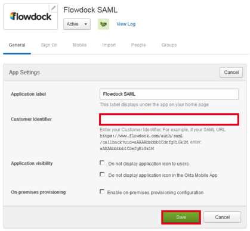

Contact the Flowdock support team and request that they enable SAML for your organization.
Copy the following three items into the message to Flowdock support.
Issuer:
Sign into the Okta Admin dashboard to generate this value.SAML URL:
Sign into the Okta Admin dashboard to generate this value.Certificate Fingerprint:
Sign into the Okta Admin dashboard to generate this value.In Okta, on the General tab for the Flowdock app, select Edit.
Enter the Customer Identifier, as shown below.
Done!
Note: IdP-initiated flows, SP-initiated flows, and Just In Time (JIT) provisioning are all supported. For an SP-initiated flow, go to the sign in page at https://www.flowdock.com/login and click the LOG IN button.